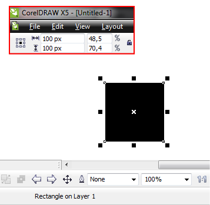

Zoom Actual Size - проблемы в x5
Есть в Кореле функция такая - Zoom Actual Size. Если вывести ее на панель инструментов, то появляется кнопка вида 1:1.
В 12-м кореле было все прекрасно. После вызова этой функции, если ширина фигуры 100px, то на экране она так и отобразится - 100рх. (Масштаб, соответственно, автоматически изменялся так, чтоб отображение фигур было реальным). (Разрешение 72dpi)
В корел Х5 при вызове Zoom Actual Size - тупо устанавливается масштаб 100%, что не соответствует действительности. Фигура шириной 100рх, например, при разрешении 72dpi, отображается реально на 134рх.
Использую корел для создания макета сайта, и это реально напрягает, что я не могу увидеть реальный размер изображения.
Может, я не то что-то делаю? И с 12-м корелом у меня все получалось по какой-то случайности?
yuk, поищи на форуме, это обсуждалось несколько раз.
Видимо да.

Случайно обнаружил:
чтобы увидеть реальный размер в Х5 - нужно в View выбрать режим 'pixels' (в 12-м такого режима не было) и установить масштаб в 100%.
А чтобы в остальных режимах посмотреть реальный размер - нужно было разрешение выставить 96dpi (как в настройках монитора) и масштаб, опять же, на 100%.
Теперь непонятно, почему в 12-м кореле при 72 dpi все отображалось якобы правильно. Ну да ладно, не очень-то хочется об этом сейчас думать.
Спасибо за ответы, проблема решена. Как мне кажется:)
Уважаемый, yuk, сия тема, действительно была обсуждаема здесь на сайте!
я кстати тогда и узнал про простой способ калибровки линеек в программе...
нюансы касались лишь разных разрешений мониторов... проще было (на мой взгляд) с мониторами с разницей сторон 4:3...(то есть 1280х1024)
ну, а после калибровки линеек, как обычно, в настройках программы масштаб 1:1 привязываешь к сочетанию клавиш... очевидно, не спорю! но ведь как удобно!:))